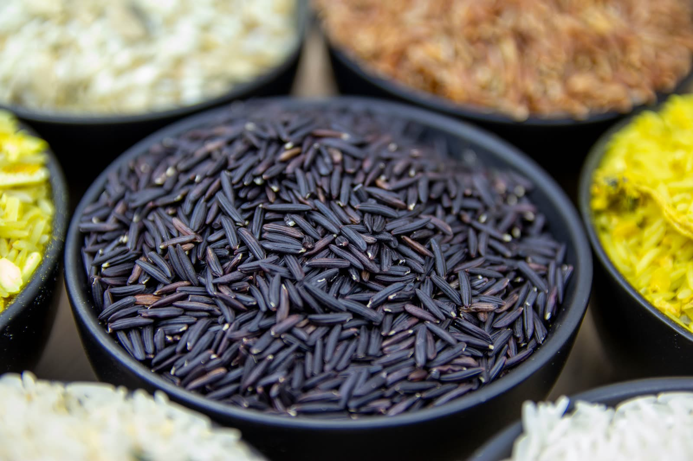
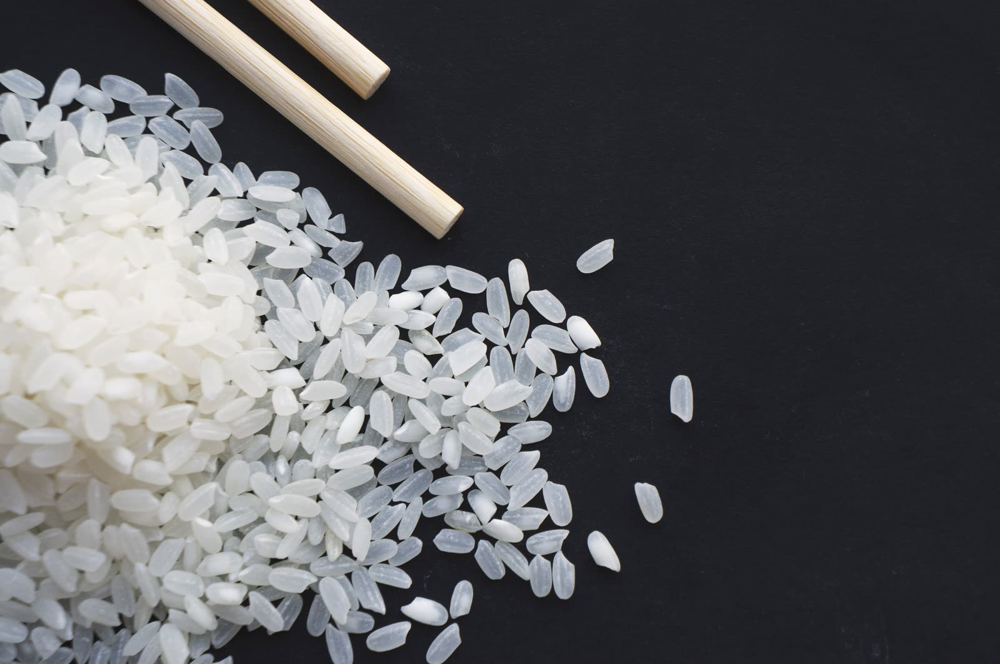

Summary: Bangladesh exports frozen shrimp and prawn, frozen and chilled fish, live mud crab and eel, and dried fish, mainly to the EU, UK, Middle East, China and the USA. Exporters must hold a Department of Fisheries (FIQC) licence, and each plant must be approved by the importing market. 148 registered seafood exporters operate across 17 districts, led by Dhaka, Khulna and Chattogram.
What Bangladesh exports
Frozen shrimp is the country's leading seafood export. Black tiger shrimp (Penaeus monodon, locally bagda) and giant freshwater prawn (Macrobrachium rosenbergii, golda) are farmed in the south-west and processed in Khulna, Satkhira and Bagerhat. Whiteleg shrimp (vannamei) farming started recently.
Wild marine fish from the Bay of Bengal (hilsa, pomfret, ribbonfish, Bombay duck, croaker, threadfin and snapper) is landed at Chattogram, Cox's Bazar and Mongla and mostly frozen whole for the Middle East and East Asia. Live mud crab and mud eel are flown to China, South Korea and South-East Asia. Chilled freshwater fish such as rohu, catla, pangasius and catfish serve South Asian communities abroad.
Beyond seafood, Bangladesh exports aromatic rice, spices, tea, fresh vegetables, mango and other seasonal fruit, frozen paratha and snacks, and a wide range of packaged foods. See the product directory for 140 lines with HS headings.
Who the exporters are
Our mapping of the Export Promotion Bureau (EPB) directory counts 148 registered seafood and fisheries exporters. They cluster by product: shrimp processors in Khulna, marine fish processors in Chattogram, live and chilled fish traders in Dhaka, and dried fish traders around the Akhaura land port in Brahmanbaria and in Cox's Bazar.
| District | Exporters | Share |
|---|---|---|
| Dhaka | 37 | 25.0% |
| Khulna | 33 | 22.3% |
| Chattogram | 29 | 19.6% |
| Brahmanbaria | 14 | 9.5% |
| Jashore | 10 | 6.8% |
| Cox's Bazar | 5 | 3.4% |
| Sylhet | 4 | 2.7% |
| Bagerhat | 3 | 2.0% |
| Sunamganj | 3 | 2.0% |
| Other districts | 10 | 6.8% |
Source: EPB exporter directory, compiled by GoodBuy Foods Global, October 2026.
HS codes for Bangladeshi seafood
| HS | Category | Typical items | Exporters |
|---|---|---|---|
| 0303 | Frozen fish | Sea fish, hilsa, pomfret | 78 |
| 0302 | Fresh & chilled fish | Chilled freshwater fish, carp | 58 |
| 0301 | Live fish, eel & crab | Live mud crab, live eel (kuchia) | 53 |
| 0306 | Crustaceans (shrimp, prawn, crab) | Black tiger, freshwater prawn | 46 |
| 0305 | Dried & salted fish | Dried marine fish, salted fish | 27 |
| 0304 | Fish fillets | Pangasius, tilapia, barramundi fillets | — |
| 0307 | Molluscs | Squid, cuttlefish, octopus | — |
| 1605 | Prepared crustaceans | Breaded and cooked shrimp | — |
Exporter counts overlap because many companies ship several categories.
Licences and market approvals
The Department of Fisheries' Fish Inspection and Quality Control wing (DoF FIQC) licenses fish processing plants for export, inspects consignments and issues the health certificate that travels with each shipment. Plants carry an approval number such as KLN-57 (Khulna) or CTG-66 (Chattogram).
- European Union: the plant must be on the EU list of approved establishments for Bangladesh, and residue monitoring must meet EU rules.
- Saudi Arabia: the plant must appear on the Saudi Food & Drug Authority (SFDA) list of approved Bangladeshi establishments.
- China: exporters of live crab, eel and frozen seafood need GACC registration.
- United States: FDA facility registration and seafood HACCP compliance.
Approvals change. Ask for the current listing at the time of contract, not a past one.
Hilsa export rules
Hilsa (Tenualosa ilisha, ilish) is Bangladesh's national fish. Exports are restricted: the government allows limited volumes under permit, often around festival seasons, and announces quotas each time. Fishing bans during breeding periods also limit supply.
Trade associations
- BFFEA: Bangladesh Frozen Foods Exporters Association, for shrimp and frozen fish processors. Its member list is the most complete supplier list.
- BLCFEA: Bangladesh Live & Chilled Food Exporters Association, for live crab and eel exporters.
- BMFA: Bangladesh Marine Fisheries Association, for deep-sea fishing companies.
- EPB: Export Promotion Bureau, which keeps the national exporter directory and export statistics.
Food and crop exports


Bangladesh's food exports range from fresh vegetables and seasonal fruit to aromatic rice, tea, spices and a large processed-food industry (biscuits, snacks, juices, noodles, frozen paratha) that reaches more than 100 countries, often through South Asian retail networks.
- Export registration: every exporter needs an Export Registration Certificate (ERC) from the Office of the Chief Controller of Imports and Exports.
- Fresh produce: each consignment needs a phytosanitary certificate from the Plant Protection Wing of the Department of Agricultural Extension (DAE). Mango for the EU and other strict markets comes from monitored orchards and may need hot-water treatment.
- Processed food: buyers usually ask for HACCP, ISO 22000, FSSC 22000 or BRCGS, plus Halal certification for Muslim markets. BSTI certification applies to many products sold in Bangladesh.
- Policy limits: some staples, including aromatic rice, can be subject to export bans or permits when domestic prices rise. Check the current position before you contract.
| Sector | Main sourcing regions |
|---|---|
| Shrimp & prawn | Khulna, Satkhira, Bagerhat, Cox's Bazar |
| Marine fish | Chattogram, Cox's Bazar, Barguna, Patuakhali |
| Mango | Rajshahi, Chapainawabganj, Naogaon, Satkhira |
| Lychee | Dinajpur, Rajshahi, Pabna (Ishwardi) |
| Jackfruit & pineapple | Gazipur, Tangail (Madhupur), Moulvibazar |
| Potato | Munshiganj, Bogura, Rangpur, Joypurhat |
| Vegetables | Jashore, Bogura, Narsingdi, Cumilla |
| Aromatic rice | Dinajpur, Naogaon, Sherpur, Netrokona |
| Tea | Moulvibazar, Habiganj, Sylhet, Chattogram, Panchagarh |
| Turmeric & chilli | Bogura, Chattogram Hill Tracts, river char lands |
| Date-palm jaggery | Jashore, Jhenaidah |
| Honey | Sundarbans; mustard fields of Sirajganj and Tangail |
| Processed food | Dhaka, Gazipur, Narayanganj, Chattogram, Habiganj |
See the food & crops page for the harvest calendar.
Regulatory watch: what is changing
Rules for importing food change every year. These are the changes we are tracking for buyers of Bangladeshi products.
- Bangladesh's LDC graduation. Graduation from least-developed-country status is scheduled for 24 November 2026, and the government has asked the UN for a deferral. The EU has said Everything But Arms preferences continue for three years after graduation. Check the duty that applies to your HS code before you contract. (The Business Standard)
- US food traceability (FSMA 204). The FDA Food Traceability Rule covers most seafood. Its compliance date is 20 July 2028, and large US retailers are asking suppliers for the records earlier. (FDA)
- Catch documentation. The EU and UK require catch certificates for wild-caught fish, and the EU is moving these to its digital CATCH system. Wild-caught orders need the vessel and landing details from the start.
- Export controls in Bangladesh. Hilsa and aromatic rice are exported under government permits and quotas that change by season.
Our digital lot file is built for these rules: every shipment keeps its supplier, lot, test and movement records in one place.
Shipping and terms
Frozen seafood moves in 20- or 40-foot reefers from Chattogram or Mongla, usually transshipped in Colombo or Singapore. Europe takes 28–35 days and the Gulf 14–20 days. Live and chilled products fly from Dhaka. Common terms are FOB Chattogram or CFR to the destination port, paid by L/C at sight or T/T with a deposit. See markets & logistics.